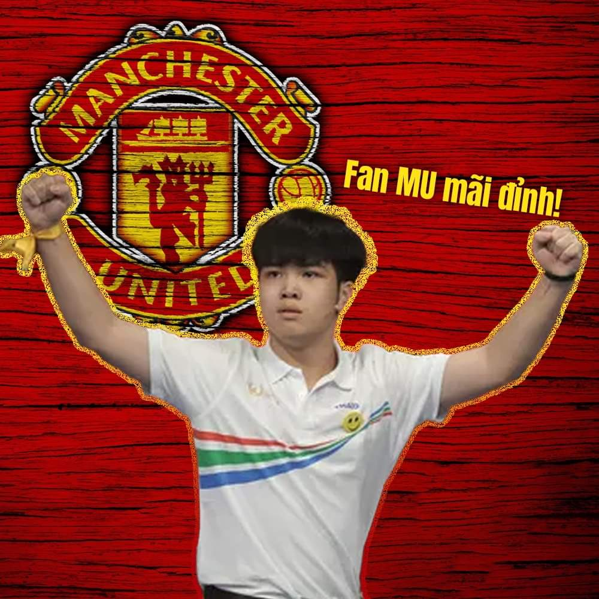

Câu lạc bộ bóng đá Manchester United
Câu lạc bộ bóng đá Manchester United là một câu lạc bộ bóng đá chuyên nghiệp có trụ sở tại Old Trafford, Đại Manchester, Anh. Câu lạc bộ hiện đang chơi tại Giải bóng đá Ngoại hạng Anh, giải đấu hàng đầu trong hệ thống bóng đá Anh. Wikipedia
Người quản lý: Erik ten Hag Thịnh hành
Trụ sở: Old Trafford, Stretford, Vương Quốc Anh
Nhà sáng lập: Công ty Đường sắt Lancashire và Yorkshire
Sân/sân vận động: Sân vận động Old Trafford
Giám đốc điều hành: Richard Arnold (thg 2 2022–)
Ngày thành lập: 1878, Newton Heath, Manchester, Vương Quốc Anh